# Python ≥3.5 is required
import sys
assert sys.version_info >= (3, 5)
# Scikit-Learn ≥0.20 is required
import sklearn
assert sklearn.__version__ >= "0.20"
# Common imports
import numpy as np
import os
# to make this notebook's output stable across runs
np.random.seed(42)
# To plot pretty figures
%matplotlib inline
import matplotlib as mpl
import matplotlib.pyplot as plt
mpl.rc('axes', labelsize=14)
mpl.rc('xtick', labelsize=12)
mpl.rc('ytick', labelsize=12)
# Where to save the figures
PROJECT_ROOT_DIR = "."
CHAPTER_ID = "training_linear_models"
IMAGES_PATH = os.path.join(PROJECT_ROOT_DIR, "images", CHAPTER_ID)
os.makedirs(IMAGES_PATH, exist_ok=True)
def save_fig(fig_id, tight_layout=True, fig_extension="png", resolution=300):
path = os.path.join(IMAGES_PATH, fig_id + "." + fig_extension)
print("Saving figure", fig_id)
if tight_layout:
plt.tight_layout()
plt.savefig(path, format=fig_extension, dpi=resolution)Chapter 4 – Training Models
This notebook contains all the sample code and solutions to the exercises in chapter 4.
Setup
First, let’s import a few common modules, ensure MatplotLib plots figures inline and prepare a function to save the figures. We also check that Python 3.5 or later is installed (although Python 2.x may work, it is deprecated so we strongly recommend you use Python 3 instead), as well as Scikit-Learn ≥0.20.
Linear Regression
The Normal Equation
import numpy as np
X = 2 * np.random.rand(100, 1)
y = 4 + 3 * X + np.random.randn(100, 1)plt.plot(X, y, "b.")
plt.xlabel("$x_1$", fontsize=18)
plt.ylabel("$y$", rotation=0, fontsize=18)
plt.axis([0, 2, 0, 15])
save_fig("generated_data_plot")
plt.show()Saving figure generated_data_plot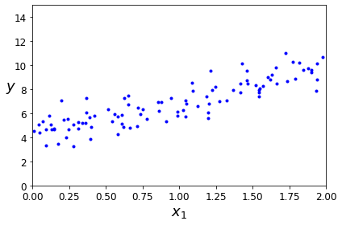
X_b = np.c_[np.ones((100, 1)), X] # add x0 = 1 to each instance
theta_best = np.linalg.inv(X_b.T.dot(X_b)).dot(X_b.T).dot(y)theta_bestarray([[4.21509616],
[2.77011339]])X_new = np.array([[0], [2]])
X_new_b = np.c_[np.ones((2, 1)), X_new] # add x0 = 1 to each instance
y_predict = X_new_b.dot(theta_best)
y_predictarray([[4.21509616],
[9.75532293]])plt.plot(X_new, y_predict, "r-")
plt.plot(X, y, "b.")
plt.axis([0, 2, 0, 15])
plt.show()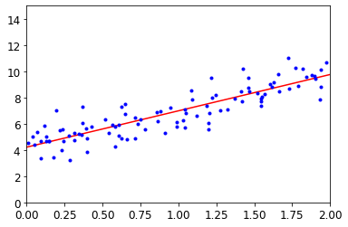
The figure in the book actually corresponds to the following code, with a legend and axis labels:
plt.plot(X_new, y_predict, "r-", linewidth=2, label="Predictions")
plt.plot(X, y, "b.")
plt.xlabel("$x_1$", fontsize=18)
plt.ylabel("$y$", rotation=0, fontsize=18)
plt.legend(loc="upper left", fontsize=14)
plt.axis([0, 2, 0, 15])
save_fig("linear_model_predictions_plot")
plt.show()Saving figure linear_model_predictions_plot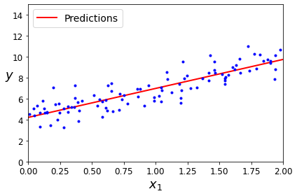
from sklearn.linear_model import LinearRegression
lin_reg = LinearRegression()
lin_reg.fit(X, y)
lin_reg.intercept_, lin_reg.coef_(array([4.21509616]), array([[2.77011339]]))lin_reg.predict(X_new)array([[4.21509616],
[9.75532293]])The LinearRegression class is based on the scipy.linalg.lstsq() function (the name stands for “least squares”), which you could call directly:
theta_best_svd, residuals, rank, s = np.linalg.lstsq(X_b, y, rcond=1e-6)
theta_best_svdarray([[4.21509616],
[2.77011339]])This function computes \(\mathbf{X}^+\mathbf{y}\), where \(\mathbf{X}^{+}\) is the pseudoinverse of \(\mathbf{X}\) (specifically the Moore-Penrose inverse). You can use np.linalg.pinv() to compute the pseudoinverse directly:
np.linalg.pinv(X_b).dot(y)array([[4.21509616],
[2.77011339]])Gradient Descent
Batch Gradient Descent
eta = 0.1 # learning rate
n_iterations = 1000
m = 100
theta = np.random.randn(2,1) # random initialization
for iteration in range(n_iterations):
gradients = 2/m * X_b.T.dot(X_b.dot(theta) - y)
theta = theta - eta * gradientsthetaarray([[4.21509616],
[2.77011339]])X_new_b.dot(theta)array([[4.21509616],
[9.75532293]])theta_path_bgd = []
def plot_gradient_descent(theta, eta, theta_path=None):
m = len(X_b)
plt.plot(X, y, "b.")
n_iterations = 1000
for iteration in range(n_iterations):
if iteration < 10:
y_predict = X_new_b.dot(theta)
style = "b-" if iteration > 0 else "r--"
plt.plot(X_new, y_predict, style)
gradients = 2/m * X_b.T.dot(X_b.dot(theta) - y)
theta = theta - eta * gradients
if theta_path is not None:
theta_path.append(theta)
plt.xlabel("$x_1$", fontsize=18)
plt.axis([0, 2, 0, 15])
plt.title(r"$\eta = {}$".format(eta), fontsize=16)np.random.seed(42)
theta = np.random.randn(2,1) # random initialization
plt.figure(figsize=(10,4))
plt.subplot(131); plot_gradient_descent(theta, eta=0.02)
plt.ylabel("$y$", rotation=0, fontsize=18)
plt.subplot(132); plot_gradient_descent(theta, eta=0.1, theta_path=theta_path_bgd)
plt.subplot(133); plot_gradient_descent(theta, eta=0.5)
save_fig("gradient_descent_plot")
plt.show()Saving figure gradient_descent_plot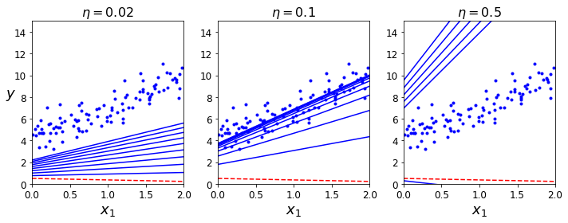
Stochastic Gradient Descent
theta_path_sgd = []
m = len(X_b)
np.random.seed(42)n_epochs = 50
t0, t1 = 5, 50 # learning schedule hyperparameters
def learning_schedule(t):
return t0 / (t + t1)
theta = np.random.randn(2,1) # random initialization
for epoch in range(n_epochs):
for i in range(m):
if epoch == 0 and i < 20: # not shown in the book
y_predict = X_new_b.dot(theta) # not shown
style = "b-" if i > 0 else "r--" # not shown
plt.plot(X_new, y_predict, style) # not shown
random_index = np.random.randint(m)
xi = X_b[random_index:random_index+1]
yi = y[random_index:random_index+1]
gradients = 2 * xi.T.dot(xi.dot(theta) - yi)
eta = learning_schedule(epoch * m + i)
theta = theta - eta * gradients
theta_path_sgd.append(theta) # not shown
plt.plot(X, y, "b.") # not shown
plt.xlabel("$x_1$", fontsize=18) # not shown
plt.ylabel("$y$", rotation=0, fontsize=18) # not shown
plt.axis([0, 2, 0, 15]) # not shown
save_fig("sgd_plot") # not shown
plt.show() # not shownSaving figure sgd_plot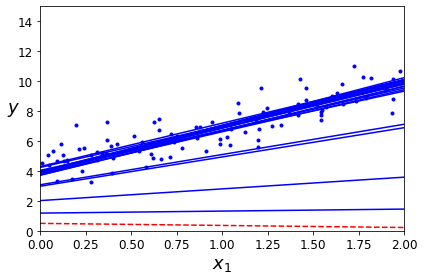
thetaarray([[4.21076011],
[2.74856079]])from sklearn.linear_model import SGDRegressor
sgd_reg = SGDRegressor(max_iter=1000, tol=1e-3, penalty=None, eta0=0.1, random_state=42)
sgd_reg.fit(X, y.ravel())SGDRegressor(eta0=0.1, penalty=None, random_state=42)sgd_reg.intercept_, sgd_reg.coef_(array([4.24365286]), array([2.8250878]))Mini-batch gradient descent
theta_path_mgd = []
n_iterations = 50
minibatch_size = 20
np.random.seed(42)
theta = np.random.randn(2,1) # random initialization
t0, t1 = 200, 1000
def learning_schedule(t):
return t0 / (t + t1)
t = 0
for epoch in range(n_iterations):
shuffled_indices = np.random.permutation(m)
X_b_shuffled = X_b[shuffled_indices]
y_shuffled = y[shuffled_indices]
for i in range(0, m, minibatch_size):
t += 1
xi = X_b_shuffled[i:i+minibatch_size]
yi = y_shuffled[i:i+minibatch_size]
gradients = 2/minibatch_size * xi.T.dot(xi.dot(theta) - yi)
eta = learning_schedule(t)
theta = theta - eta * gradients
theta_path_mgd.append(theta)thetaarray([[4.25214635],
[2.7896408 ]])theta_path_bgd = np.array(theta_path_bgd)
theta_path_sgd = np.array(theta_path_sgd)
theta_path_mgd = np.array(theta_path_mgd)plt.figure(figsize=(7,4))
plt.plot(theta_path_sgd[:, 0], theta_path_sgd[:, 1], "r-s", linewidth=1, label="Stochastic")
plt.plot(theta_path_mgd[:, 0], theta_path_mgd[:, 1], "g-+", linewidth=2, label="Mini-batch")
plt.plot(theta_path_bgd[:, 0], theta_path_bgd[:, 1], "b-o", linewidth=3, label="Batch")
plt.legend(loc="upper left", fontsize=16)
plt.xlabel(r"$\theta_0$", fontsize=20)
plt.ylabel(r"$\theta_1$ ", fontsize=20, rotation=0)
plt.axis([2.5, 4.5, 2.3, 3.9])
save_fig("gradient_descent_paths_plot")
plt.show()Saving figure gradient_descent_paths_plot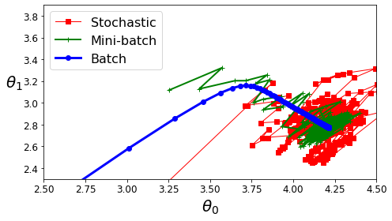
Polynomial Regression
import numpy as np
import numpy.random as rnd
np.random.seed(42)m = 100
X = 6 * np.random.rand(m, 1) - 3
y = 0.5 * X**2 + X + 2 + np.random.randn(m, 1)plt.plot(X, y, "b.")
plt.xlabel("$x_1$", fontsize=18)
plt.ylabel("$y$", rotation=0, fontsize=18)
plt.axis([-3, 3, 0, 10])
save_fig("quadratic_data_plot")
plt.show()Saving figure quadratic_data_plot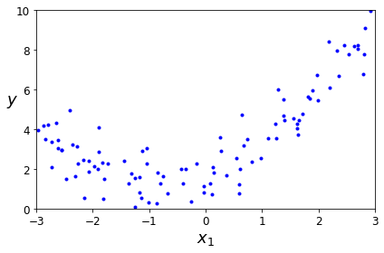
from sklearn.preprocessing import PolynomialFeatures
poly_features = PolynomialFeatures(degree=2, include_bias=False)
X_poly = poly_features.fit_transform(X)
X[0]array([-0.75275929])X_poly[0]array([-0.75275929, 0.56664654])lin_reg = LinearRegression()
lin_reg.fit(X_poly, y)
lin_reg.intercept_, lin_reg.coef_(array([1.78134581]), array([[0.93366893, 0.56456263]]))X_new=np.linspace(-3, 3, 100).reshape(100, 1)
X_new_poly = poly_features.transform(X_new)
y_new = lin_reg.predict(X_new_poly)
plt.plot(X, y, "b.")
plt.plot(X_new, y_new, "r-", linewidth=2, label="Predictions")
plt.xlabel("$x_1$", fontsize=18)
plt.ylabel("$y$", rotation=0, fontsize=18)
plt.legend(loc="upper left", fontsize=14)
plt.axis([-3, 3, 0, 10])
save_fig("quadratic_predictions_plot")
plt.show()Saving figure quadratic_predictions_plot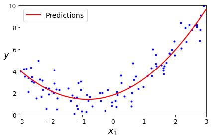
from sklearn.preprocessing import StandardScaler
from sklearn.pipeline import Pipeline
for style, width, degree in (("g-", 1, 300), ("b--", 2, 2), ("r-+", 2, 1)):
polybig_features = PolynomialFeatures(degree=degree, include_bias=False)
std_scaler = StandardScaler()
lin_reg = LinearRegression()
polynomial_regression = Pipeline([
("poly_features", polybig_features),
("std_scaler", std_scaler),
("lin_reg", lin_reg),
])
polynomial_regression.fit(X, y)
y_newbig = polynomial_regression.predict(X_new)
plt.plot(X_new, y_newbig, style, label=str(degree), linewidth=width)
plt.plot(X, y, "b.", linewidth=3)
plt.legend(loc="upper left")
plt.xlabel("$x_1$", fontsize=18)
plt.ylabel("$y$", rotation=0, fontsize=18)
plt.axis([-3, 3, 0, 10])
save_fig("high_degree_polynomials_plot")
plt.show()Saving figure high_degree_polynomials_plot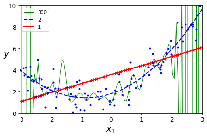
Learning Curves
from sklearn.metrics import mean_squared_error
from sklearn.model_selection import train_test_split
def plot_learning_curves(model, X, y):
X_train, X_val, y_train, y_val = train_test_split(X, y, test_size=0.2, random_state=10)
train_errors, val_errors = [], []
for m in range(1, len(X_train) + 1):
model.fit(X_train[:m], y_train[:m])
y_train_predict = model.predict(X_train[:m])
y_val_predict = model.predict(X_val)
train_errors.append(mean_squared_error(y_train[:m], y_train_predict))
val_errors.append(mean_squared_error(y_val, y_val_predict))
plt.plot(np.sqrt(train_errors), "r-+", linewidth=2, label="train")
plt.plot(np.sqrt(val_errors), "b-", linewidth=3, label="val")
plt.legend(loc="upper right", fontsize=14) # not shown in the book
plt.xlabel("Training set size", fontsize=14) # not shown
plt.ylabel("RMSE", fontsize=14) # not shownlin_reg = LinearRegression()
plot_learning_curves(lin_reg, X, y)
plt.axis([0, 80, 0, 3]) # not shown in the book
save_fig("underfitting_learning_curves_plot") # not shown
plt.show() # not shownSaving figure underfitting_learning_curves_plot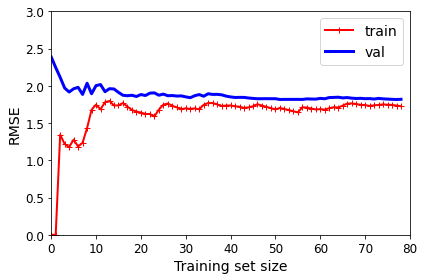
from sklearn.pipeline import Pipeline
polynomial_regression = Pipeline([
("poly_features", PolynomialFeatures(degree=10, include_bias=False)),
("lin_reg", LinearRegression()),
])
plot_learning_curves(polynomial_regression, X, y)
plt.axis([0, 80, 0, 3]) # not shown
save_fig("learning_curves_plot") # not shown
plt.show() # not shownSaving figure learning_curves_plot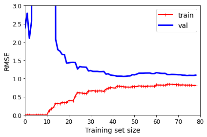
Regularized Linear Models
Ridge Regression
np.random.seed(42)
m = 20
X = 3 * np.random.rand(m, 1)
y = 1 + 0.5 * X + np.random.randn(m, 1) / 1.5
X_new = np.linspace(0, 3, 100).reshape(100, 1)from sklearn.linear_model import Ridge
ridge_reg = Ridge(alpha=1, solver="cholesky", random_state=42)
ridge_reg.fit(X, y)
ridge_reg.predict([[1.5]])array([[1.55071465]])ridge_reg = Ridge(alpha=1, solver="sag", random_state=42)
ridge_reg.fit(X, y)
ridge_reg.predict([[1.5]])array([[1.5507201]])from sklearn.linear_model import Ridge
def plot_model(model_class, polynomial, alphas, **model_kargs):
for alpha, style in zip(alphas, ("b-", "g--", "r:")):
model = model_class(alpha, **model_kargs) if alpha > 0 else LinearRegression()
if polynomial:
model = Pipeline([
("poly_features", PolynomialFeatures(degree=10, include_bias=False)),
("std_scaler", StandardScaler()),
("regul_reg", model),
])
model.fit(X, y)
y_new_regul = model.predict(X_new)
lw = 2 if alpha > 0 else 1
plt.plot(X_new, y_new_regul, style, linewidth=lw, label=r"$\alpha = {}$".format(alpha))
plt.plot(X, y, "b.", linewidth=3)
plt.legend(loc="upper left", fontsize=15)
plt.xlabel("$x_1$", fontsize=18)
plt.axis([0, 3, 0, 4])
plt.figure(figsize=(8,4))
plt.subplot(121)
plot_model(Ridge, polynomial=False, alphas=(0, 10, 100), random_state=42)
plt.ylabel("$y$", rotation=0, fontsize=18)
plt.subplot(122)
plot_model(Ridge, polynomial=True, alphas=(0, 10**-5, 1), random_state=42)
save_fig("ridge_regression_plot")
plt.show()Saving figure ridge_regression_plot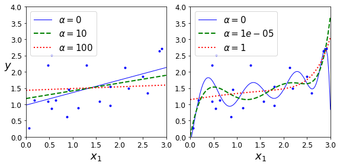
Note: to be future-proof, we set max_iter=1000 and tol=1e-3 because these will be the default values in Scikit-Learn 0.21.
sgd_reg = SGDRegressor(penalty="l2", max_iter=1000, tol=1e-3, random_state=42)
sgd_reg.fit(X, y.ravel())
sgd_reg.predict([[1.5]])array([1.47012588])Lasso Regression
from sklearn.linear_model import Lasso
plt.figure(figsize=(8,4))
plt.subplot(121)
plot_model(Lasso, polynomial=False, alphas=(0, 0.1, 1), random_state=42)
plt.ylabel("$y$", rotation=0, fontsize=18)
plt.subplot(122)
plot_model(Lasso, polynomial=True, alphas=(0, 10**-7, 1), random_state=42)
save_fig("lasso_regression_plot")
plt.show()Saving figure lasso_regression_plot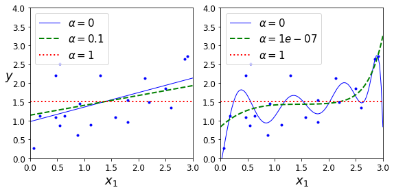
from sklearn.linear_model import Lasso
lasso_reg = Lasso(alpha=0.1)
lasso_reg.fit(X, y)
lasso_reg.predict([[1.5]])array([1.53788174])Elastic Net
from sklearn.linear_model import ElasticNet
elastic_net = ElasticNet(alpha=0.1, l1_ratio=0.5, random_state=42)
elastic_net.fit(X, y)
elastic_net.predict([[1.5]])array([1.54333232])Early Stopping
np.random.seed(42)
m = 100
X = 6 * np.random.rand(m, 1) - 3
y = 2 + X + 0.5 * X**2 + np.random.randn(m, 1)
X_train, X_val, y_train, y_val = train_test_split(X[:50], y[:50].ravel(), test_size=0.5, random_state=10)from copy import deepcopy
poly_scaler = Pipeline([
("poly_features", PolynomialFeatures(degree=90, include_bias=False)),
("std_scaler", StandardScaler())
])
X_train_poly_scaled = poly_scaler.fit_transform(X_train)
X_val_poly_scaled = poly_scaler.transform(X_val)
sgd_reg = SGDRegressor(max_iter=1, tol=-np.infty, warm_start=True,
penalty=None, learning_rate="constant", eta0=0.0005, random_state=42)
minimum_val_error = float("inf")
best_epoch = None
best_model = None
for epoch in range(1000):
sgd_reg.fit(X_train_poly_scaled, y_train) # continues where it left off
y_val_predict = sgd_reg.predict(X_val_poly_scaled)
val_error = mean_squared_error(y_val, y_val_predict)
if val_error < minimum_val_error:
minimum_val_error = val_error
best_epoch = epoch
best_model = deepcopy(sgd_reg)Create the graph:
sgd_reg = SGDRegressor(max_iter=1, tol=-np.infty, warm_start=True,
penalty=None, learning_rate="constant", eta0=0.0005, random_state=42)
n_epochs = 500
train_errors, val_errors = [], []
for epoch in range(n_epochs):
sgd_reg.fit(X_train_poly_scaled, y_train)
y_train_predict = sgd_reg.predict(X_train_poly_scaled)
y_val_predict = sgd_reg.predict(X_val_poly_scaled)
train_errors.append(mean_squared_error(y_train, y_train_predict))
val_errors.append(mean_squared_error(y_val, y_val_predict))
best_epoch = np.argmin(val_errors)
best_val_rmse = np.sqrt(val_errors[best_epoch])
plt.annotate('Best model',
xy=(best_epoch, best_val_rmse),
xytext=(best_epoch, best_val_rmse + 1),
ha="center",
arrowprops=dict(facecolor='black', shrink=0.05),
fontsize=16,
)
best_val_rmse -= 0.03 # just to make the graph look better
plt.plot([0, n_epochs], [best_val_rmse, best_val_rmse], "k:", linewidth=2)
plt.plot(np.sqrt(val_errors), "b-", linewidth=3, label="Validation set")
plt.plot(np.sqrt(train_errors), "r--", linewidth=2, label="Training set")
plt.legend(loc="upper right", fontsize=14)
plt.xlabel("Epoch", fontsize=14)
plt.ylabel("RMSE", fontsize=14)
save_fig("early_stopping_plot")
plt.show()Saving figure early_stopping_plot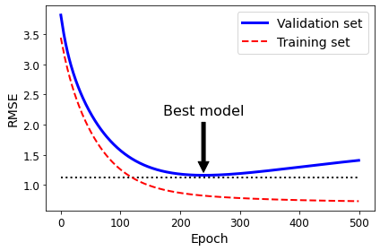
best_epoch, best_model(239,
SGDRegressor(eta0=0.0005, learning_rate='constant', max_iter=1, penalty=None,
random_state=42, tol=-inf, warm_start=True))%matplotlib inline
import matplotlib.pyplot as plt
import numpy as npt1a, t1b, t2a, t2b = -1, 3, -1.5, 1.5
t1s = np.linspace(t1a, t1b, 500)
t2s = np.linspace(t2a, t2b, 500)
t1, t2 = np.meshgrid(t1s, t2s)
T = np.c_[t1.ravel(), t2.ravel()]
Xr = np.array([[1, 1], [1, -1], [1, 0.5]])
yr = 2 * Xr[:, :1] + 0.5 * Xr[:, 1:]
J = (1/len(Xr) * np.sum((T.dot(Xr.T) - yr.T)**2, axis=1)).reshape(t1.shape)
N1 = np.linalg.norm(T, ord=1, axis=1).reshape(t1.shape)
N2 = np.linalg.norm(T, ord=2, axis=1).reshape(t1.shape)
t_min_idx = np.unravel_index(np.argmin(J), J.shape)
t1_min, t2_min = t1[t_min_idx], t2[t_min_idx]
t_init = np.array([[0.25], [-1]])def bgd_path(theta, X, y, l1, l2, core = 1, eta = 0.05, n_iterations = 200):
path = [theta]
for iteration in range(n_iterations):
gradients = core * 2/len(X) * X.T.dot(X.dot(theta) - y) + l1 * np.sign(theta) + l2 * theta
theta = theta - eta * gradients
path.append(theta)
return np.array(path)
fig, axes = plt.subplots(2, 2, sharex=True, sharey=True, figsize=(10.1, 8))
for i, N, l1, l2, title in ((0, N1, 2., 0, "Lasso"), (1, N2, 0, 2., "Ridge")):
JR = J + l1 * N1 + l2 * 0.5 * N2**2
tr_min_idx = np.unravel_index(np.argmin(JR), JR.shape)
t1r_min, t2r_min = t1[tr_min_idx], t2[tr_min_idx]
levelsJ=(np.exp(np.linspace(0, 1, 20)) - 1) * (np.max(J) - np.min(J)) + np.min(J)
levelsJR=(np.exp(np.linspace(0, 1, 20)) - 1) * (np.max(JR) - np.min(JR)) + np.min(JR)
levelsN=np.linspace(0, np.max(N), 10)
path_J = bgd_path(t_init, Xr, yr, l1=0, l2=0)
path_JR = bgd_path(t_init, Xr, yr, l1, l2)
path_N = bgd_path(np.array([[2.0], [0.5]]), Xr, yr, np.sign(l1)/3, np.sign(l2), core=0)
ax = axes[i, 0]
ax.grid(True)
ax.axhline(y=0, color='k')
ax.axvline(x=0, color='k')
ax.contourf(t1, t2, N / 2., levels=levelsN)
ax.plot(path_N[:, 0], path_N[:, 1], "y--")
ax.plot(0, 0, "ys")
ax.plot(t1_min, t2_min, "ys")
ax.set_title(r"$\ell_{}$ penalty".format(i + 1), fontsize=16)
ax.axis([t1a, t1b, t2a, t2b])
if i == 1:
ax.set_xlabel(r"$\theta_1$", fontsize=16)
ax.set_ylabel(r"$\theta_2$", fontsize=16, rotation=0)
ax = axes[i, 1]
ax.grid(True)
ax.axhline(y=0, color='k')
ax.axvline(x=0, color='k')
ax.contourf(t1, t2, JR, levels=levelsJR, alpha=0.9)
ax.plot(path_JR[:, 0], path_JR[:, 1], "w-o")
ax.plot(path_N[:, 0], path_N[:, 1], "y--")
ax.plot(0, 0, "ys")
ax.plot(t1_min, t2_min, "ys")
ax.plot(t1r_min, t2r_min, "rs")
ax.set_title(title, fontsize=16)
ax.axis([t1a, t1b, t2a, t2b])
if i == 1:
ax.set_xlabel(r"$\theta_1$", fontsize=16)
save_fig("lasso_vs_ridge_plot")
plt.show()Saving figure lasso_vs_ridge_plot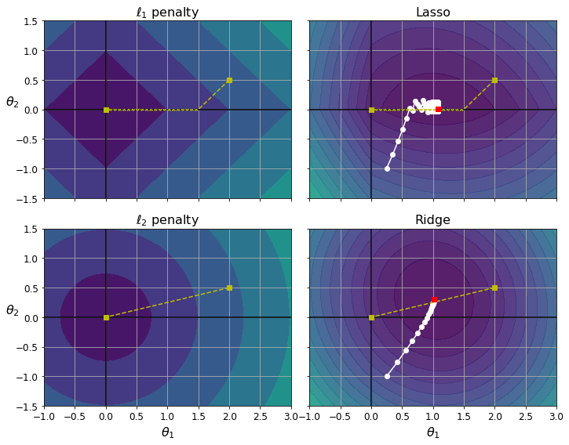
Logistic Regression
Decision Boundaries
t = np.linspace(-10, 10, 100)
sig = 1 / (1 + np.exp(-t))
plt.figure(figsize=(9, 3))
plt.plot([-10, 10], [0, 0], "k-")
plt.plot([-10, 10], [0.5, 0.5], "k:")
plt.plot([-10, 10], [1, 1], "k:")
plt.plot([0, 0], [-1.1, 1.1], "k-")
plt.plot(t, sig, "b-", linewidth=2, label=r"$\sigma(t) = \frac{1}{1 + e^{-t}}$")
plt.xlabel("t")
plt.legend(loc="upper left", fontsize=20)
plt.axis([-10, 10, -0.1, 1.1])
save_fig("logistic_function_plot")
plt.show()Saving figure logistic_function_plot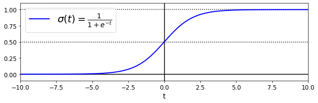
from sklearn import datasets
iris = datasets.load_iris()
list(iris.keys())['data',
'target',
'frame',
'target_names',
'DESCR',
'feature_names',
'filename']print(iris.DESCR).. _iris_dataset:
Iris plants dataset
--------------------
**Data Set Characteristics:**
:Number of Instances: 150 (50 in each of three classes)
:Number of Attributes: 4 numeric, predictive attributes and the class
:Attribute Information:
- sepal length in cm
- sepal width in cm
- petal length in cm
- petal width in cm
- class:
- Iris-Setosa
- Iris-Versicolour
- Iris-Virginica
:Summary Statistics:
============== ==== ==== ======= ===== ====================
Min Max Mean SD Class Correlation
============== ==== ==== ======= ===== ====================
sepal length: 4.3 7.9 5.84 0.83 0.7826
sepal width: 2.0 4.4 3.05 0.43 -0.4194
petal length: 1.0 6.9 3.76 1.76 0.9490 (high!)
petal width: 0.1 2.5 1.20 0.76 0.9565 (high!)
============== ==== ==== ======= ===== ====================
:Missing Attribute Values: None
:Class Distribution: 33.3% for each of 3 classes.
:Creator: R.A. Fisher
:Donor: Michael Marshall (MARSHALL%PLU@io.arc.nasa.gov)
:Date: July, 1988
The famous Iris database, first used by Sir R.A. Fisher. The dataset is taken
from Fisher's paper. Note that it's the same as in R, but not as in the UCI
Machine Learning Repository, which has two wrong data points.
This is perhaps the best known database to be found in the
pattern recognition literature. Fisher's paper is a classic in the field and
is referenced frequently to this day. (See Duda & Hart, for example.) The
data set contains 3 classes of 50 instances each, where each class refers to a
type of iris plant. One class is linearly separable from the other 2; the
latter are NOT linearly separable from each other.
.. topic:: References
- Fisher, R.A. "The use of multiple measurements in taxonomic problems"
Annual Eugenics, 7, Part II, 179-188 (1936); also in "Contributions to
Mathematical Statistics" (John Wiley, NY, 1950).
- Duda, R.O., & Hart, P.E. (1973) Pattern Classification and Scene Analysis.
(Q327.D83) John Wiley & Sons. ISBN 0-471-22361-1. See page 218.
- Dasarathy, B.V. (1980) "Nosing Around the Neighborhood: A New System
Structure and Classification Rule for Recognition in Partially Exposed
Environments". IEEE Transactions on Pattern Analysis and Machine
Intelligence, Vol. PAMI-2, No. 1, 67-71.
- Gates, G.W. (1972) "The Reduced Nearest Neighbor Rule". IEEE Transactions
on Information Theory, May 1972, 431-433.
- See also: 1988 MLC Proceedings, 54-64. Cheeseman et al"s AUTOCLASS II
conceptual clustering system finds 3 classes in the data.
- Many, many more ...X = iris["data"][:, 3:] # petal width
y = (iris["target"] == 2).astype(np.int) # 1 if Iris virginica, else 0Note: To be future-proof we set solver="lbfgs" since this will be the default value in Scikit-Learn 0.22.
from sklearn.linear_model import LogisticRegression
log_reg = LogisticRegression(solver="lbfgs", random_state=42)
log_reg.fit(X, y)LogisticRegression(random_state=42)X_new = np.linspace(0, 3, 1000).reshape(-1, 1)
y_proba = log_reg.predict_proba(X_new)
plt.plot(X_new, y_proba[:, 1], "g-", linewidth=2, label="Iris virginica")
plt.plot(X_new, y_proba[:, 0], "b--", linewidth=2, label="Not Iris virginica")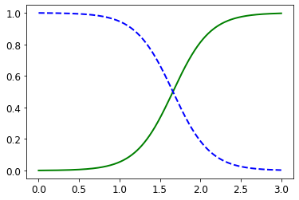
The figure in the book actually is actually a bit fancier:
X_new = np.linspace(0, 3, 1000).reshape(-1, 1)
y_proba = log_reg.predict_proba(X_new)
decision_boundary = X_new[y_proba[:, 1] >= 0.5][0]
plt.figure(figsize=(8, 3))
plt.plot(X[y==0], y[y==0], "bs")
plt.plot(X[y==1], y[y==1], "g^")
plt.plot([decision_boundary, decision_boundary], [-1, 2], "k:", linewidth=2)
plt.plot(X_new, y_proba[:, 1], "g-", linewidth=2, label="Iris virginica")
plt.plot(X_new, y_proba[:, 0], "b--", linewidth=2, label="Not Iris virginica")
plt.text(decision_boundary+0.02, 0.15, "Decision boundary", fontsize=14, color="k", ha="center")
plt.arrow(decision_boundary, 0.08, -0.3, 0, head_width=0.05, head_length=0.1, fc='b', ec='b')
plt.arrow(decision_boundary, 0.92, 0.3, 0, head_width=0.05, head_length=0.1, fc='g', ec='g')
plt.xlabel("Petal width (cm)", fontsize=14)
plt.ylabel("Probability", fontsize=14)
plt.legend(loc="center left", fontsize=14)
plt.axis([0, 3, -0.02, 1.02])
save_fig("logistic_regression_plot")
plt.show()Saving figure logistic_regression_plot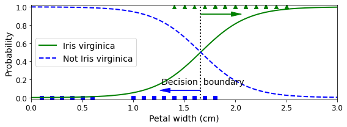
decision_boundaryarray([1.66066066])log_reg.predict([[1.7], [1.5]])array([1, 0])Softmax Regression
from sklearn.linear_model import LogisticRegression
X = iris["data"][:, (2, 3)] # petal length, petal width
y = (iris["target"] == 2).astype(np.int)
log_reg = LogisticRegression(solver="lbfgs", C=10**10, random_state=42)
log_reg.fit(X, y)
x0, x1 = np.meshgrid(
np.linspace(2.9, 7, 500).reshape(-1, 1),
np.linspace(0.8, 2.7, 200).reshape(-1, 1),
)
X_new = np.c_[x0.ravel(), x1.ravel()]
y_proba = log_reg.predict_proba(X_new)
plt.figure(figsize=(10, 4))
plt.plot(X[y==0, 0], X[y==0, 1], "bs")
plt.plot(X[y==1, 0], X[y==1, 1], "g^")
zz = y_proba[:, 1].reshape(x0.shape)
contour = plt.contour(x0, x1, zz, cmap=plt.cm.brg)
left_right = np.array([2.9, 7])
boundary = -(log_reg.coef_[0][0] * left_right + log_reg.intercept_[0]) / log_reg.coef_[0][1]
plt.clabel(contour, inline=1, fontsize=12)
plt.plot(left_right, boundary, "k--", linewidth=3)
plt.text(3.5, 1.5, "Not Iris virginica", fontsize=14, color="b", ha="center")
plt.text(6.5, 2.3, "Iris virginica", fontsize=14, color="g", ha="center")
plt.xlabel("Petal length", fontsize=14)
plt.ylabel("Petal width", fontsize=14)
plt.axis([2.9, 7, 0.8, 2.7])
save_fig("logistic_regression_contour_plot")
plt.show()Saving figure logistic_regression_contour_plot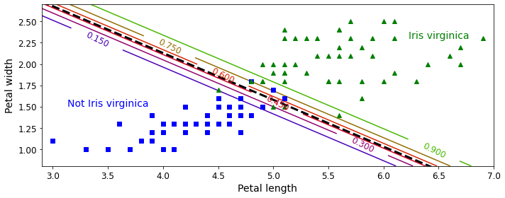
X = iris["data"][:, (2, 3)] # petal length, petal width
y = iris["target"]
softmax_reg = LogisticRegression(multi_class="multinomial",solver="lbfgs", C=10, random_state=42)
softmax_reg.fit(X, y)LogisticRegression(C=10, multi_class='multinomial', random_state=42)x0, x1 = np.meshgrid(
np.linspace(0, 8, 500).reshape(-1, 1),
np.linspace(0, 3.5, 200).reshape(-1, 1),
)
X_new = np.c_[x0.ravel(), x1.ravel()]
y_proba = softmax_reg.predict_proba(X_new)
y_predict = softmax_reg.predict(X_new)
zz1 = y_proba[:, 1].reshape(x0.shape)
zz = y_predict.reshape(x0.shape)
plt.figure(figsize=(10, 4))
plt.plot(X[y==2, 0], X[y==2, 1], "g^", label="Iris virginica")
plt.plot(X[y==1, 0], X[y==1, 1], "bs", label="Iris versicolor")
plt.plot(X[y==0, 0], X[y==0, 1], "yo", label="Iris setosa")
from matplotlib.colors import ListedColormap
custom_cmap = ListedColormap(['#fafab0','#9898ff','#a0faa0'])
plt.contourf(x0, x1, zz, cmap=custom_cmap)
contour = plt.contour(x0, x1, zz1, cmap=plt.cm.brg)
plt.clabel(contour, inline=1, fontsize=12)
plt.xlabel("Petal length", fontsize=14)
plt.ylabel("Petal width", fontsize=14)
plt.legend(loc="center left", fontsize=14)
plt.axis([0, 7, 0, 3.5])
save_fig("softmax_regression_contour_plot")
plt.show()Saving figure softmax_regression_contour_plot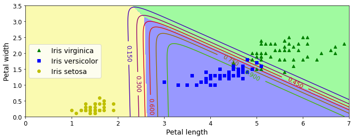
softmax_reg.predict([[5, 2]])array([2])softmax_reg.predict_proba([[5, 2]])array([[6.38014896e-07, 5.74929995e-02, 9.42506362e-01]])Exercise solutions
1. to 11.
See appendix A.
12. Batch Gradient Descent with early stopping for Softmax Regression
(without using Scikit-Learn)
Let’s start by loading the data. We will just reuse the Iris dataset we loaded earlier.
X = iris["data"][:, (2, 3)] # petal length, petal width
y = iris["target"]We need to add the bias term for every instance (\(x_0 = 1\)):
X_with_bias = np.c_[np.ones([len(X), 1]), X]And let’s set the random seed so the output of this exercise solution is reproducible:
np.random.seed(2042)The easiest option to split the dataset into a training set, a validation set and a test set would be to use Scikit-Learn’s train_test_split() function, but the point of this exercise is to try understand the algorithms by implementing them manually. So here is one possible implementation:
test_ratio = 0.2
validation_ratio = 0.2
total_size = len(X_with_bias)
test_size = int(total_size * test_ratio)
validation_size = int(total_size * validation_ratio)
train_size = total_size - test_size - validation_size
rnd_indices = np.random.permutation(total_size)
X_train = X_with_bias[rnd_indices[:train_size]]
y_train = y[rnd_indices[:train_size]]
X_valid = X_with_bias[rnd_indices[train_size:-test_size]]
y_valid = y[rnd_indices[train_size:-test_size]]
X_test = X_with_bias[rnd_indices[-test_size:]]
y_test = y[rnd_indices[-test_size:]]The targets are currently class indices (0, 1 or 2), but we need target class probabilities to train the Softmax Regression model. Each instance will have target class probabilities equal to 0.0 for all classes except for the target class which will have a probability of 1.0 (in other words, the vector of class probabilities for ay given instance is a one-hot vector). Let’s write a small function to convert the vector of class indices into a matrix containing a one-hot vector for each instance:
def to_one_hot(y):
n_classes = y.max() + 1
m = len(y)
Y_one_hot = np.zeros((m, n_classes))
Y_one_hot[np.arange(m), y] = 1
return Y_one_hotLet’s test this function on the first 10 instances:
y_train[:10]array([0, 1, 2, 1, 1, 0, 1, 1, 1, 0])to_one_hot(y_train[:10])array([[1., 0., 0.],
[0., 1., 0.],
[0., 0., 1.],
[0., 1., 0.],
[0., 1., 0.],
[1., 0., 0.],
[0., 1., 0.],
[0., 1., 0.],
[0., 1., 0.],
[1., 0., 0.]])Looks good, so let’s create the target class probabilities matrix for the training set and the test set:
Y_train_one_hot = to_one_hot(y_train)
Y_valid_one_hot = to_one_hot(y_valid)
Y_test_one_hot = to_one_hot(y_test)Now let’s implement the Softmax function. Recall that it is defined by the following equation:
\(\sigma\left(\mathbf{s}(\mathbf{x})\right)_k = \dfrac{\exp\left(s_k(\mathbf{x})\right)}{\sum\limits_{j=1}^{K}{\exp\left(s_j(\mathbf{x})\right)}}\)
def softmax(logits):
exps = np.exp(logits)
exp_sums = np.sum(exps, axis=1, keepdims=True)
return exps / exp_sumsWe are almost ready to start training. Let’s define the number of inputs and outputs:
n_inputs = X_train.shape[1] # == 3 (2 features plus the bias term)
n_outputs = len(np.unique(y_train)) # == 3 (3 iris classes)Now here comes the hardest part: training! Theoretically, it’s simple: it’s just a matter of translating the math equations into Python code. But in practice, it can be quite tricky: in particular, it’s easy to mix up the order of the terms, or the indices. You can even end up with code that looks like it’s working but is actually not computing exactly the right thing. When unsure, you should write down the shape of each term in the equation and make sure the corresponding terms in your code match closely. It can also help to evaluate each term independently and print them out. The good news it that you won’t have to do this everyday, since all this is well implemented by Scikit-Learn, but it will help you understand what’s going on under the hood.
So the equations we will need are the cost function:
\(J(\mathbf{\Theta}) = - \dfrac{1}{m}\sum\limits_{i=1}^{m}\sum\limits_{k=1}^{K}{y_k^{(i)}\log\left(\hat{p}_k^{(i)}\right)}\)
And the equation for the gradients:
\(\nabla_{\mathbf{\theta}^{(k)}} \, J(\mathbf{\Theta}) = \dfrac{1}{m} \sum\limits_{i=1}^{m}{ \left ( \hat{p}^{(i)}_k - y_k^{(i)} \right ) \mathbf{x}^{(i)}}\)
Note that \(\log\left(\hat{p}_k^{(i)}\right)\) may not be computable if \(\hat{p}_k^{(i)} = 0\). So we will add a tiny value \(\epsilon\) to \(\log\left(\hat{p}_k^{(i)}\right)\) to avoid getting nan values.
eta = 0.01
n_iterations = 5001
m = len(X_train)
epsilon = 1e-7
Theta = np.random.randn(n_inputs, n_outputs)
for iteration in range(n_iterations):
logits = X_train.dot(Theta)
Y_proba = softmax(logits)
if iteration % 500 == 0:
loss = -np.mean(np.sum(Y_train_one_hot * np.log(Y_proba + epsilon), axis=1))
print(iteration, loss)
error = Y_proba - Y_train_one_hot
gradients = 1/m * X_train.T.dot(error)
Theta = Theta - eta * gradients0 5.446205811872683
500 0.8350062641405651
1000 0.6878801447192402
1500 0.6012379137693314
2000 0.5444496861981872
2500 0.5038530181431525
3000 0.47292289721922487
3500 0.44824244188957774
4000 0.4278651093928793
4500 0.41060071429187134
5000 0.3956780375390374And that’s it! The Softmax model is trained. Let’s look at the model parameters:
Thetaarray([[ 3.32094157, -0.6501102 , -2.99979416],
[-1.1718465 , 0.11706172, 0.10507543],
[-0.70224261, -0.09527802, 1.4786383 ]])Let’s make predictions for the validation set and check the accuracy score:
logits = X_valid.dot(Theta)
Y_proba = softmax(logits)
y_predict = np.argmax(Y_proba, axis=1)
accuracy_score = np.mean(y_predict == y_valid)
accuracy_score0.9666666666666667Well, this model looks pretty good. For the sake of the exercise, let’s add a bit of \(\ell_2\) regularization. The following training code is similar to the one above, but the loss now has an additional \(\ell_2\) penalty, and the gradients have the proper additional term (note that we don’t regularize the first element of Theta since this corresponds to the bias term). Also, let’s try increasing the learning rate eta.
eta = 0.1
n_iterations = 5001
m = len(X_train)
epsilon = 1e-7
alpha = 0.1 # regularization hyperparameter
Theta = np.random.randn(n_inputs, n_outputs)
for iteration in range(n_iterations):
logits = X_train.dot(Theta)
Y_proba = softmax(logits)
if iteration % 500 == 0:
xentropy_loss = -np.mean(np.sum(Y_train_one_hot * np.log(Y_proba + epsilon), axis=1))
l2_loss = 1/2 * np.sum(np.square(Theta[1:]))
loss = xentropy_loss + alpha * l2_loss
print(iteration, loss)
error = Y_proba - Y_train_one_hot
gradients = 1/m * X_train.T.dot(error) + np.r_[np.zeros([1, n_outputs]), alpha * Theta[1:]]
Theta = Theta - eta * gradients0 6.629842469083912
500 0.5339667976629505
1000 0.5036400750148942
1500 0.49468910594603216
2000 0.4912968418075476
2500 0.48989924700933296
3000 0.4892990598451198
3500 0.4890351244397859
4000 0.4889173621830818
4500 0.4888643337449303
5000 0.4888403120738818Because of the additional \(\ell_2\) penalty, the loss seems greater than earlier, but perhaps this model will perform better? Let’s find out:
logits = X_valid.dot(Theta)
Y_proba = softmax(logits)
y_predict = np.argmax(Y_proba, axis=1)
accuracy_score = np.mean(y_predict == y_valid)
accuracy_score1.0Cool, perfect accuracy! We probably just got lucky with this validation set, but still, it’s pleasant.
Now let’s add early stopping. For this we just need to measure the loss on the validation set at every iteration and stop when the error starts growing.
eta = 0.1
n_iterations = 5001
m = len(X_train)
epsilon = 1e-7
alpha = 0.1 # regularization hyperparameter
best_loss = np.infty
Theta = np.random.randn(n_inputs, n_outputs)
for iteration in range(n_iterations):
logits = X_train.dot(Theta)
Y_proba = softmax(logits)
error = Y_proba - Y_train_one_hot
gradients = 1/m * X_train.T.dot(error) + np.r_[np.zeros([1, n_outputs]), alpha * Theta[1:]]
Theta = Theta - eta * gradients
logits = X_valid.dot(Theta)
Y_proba = softmax(logits)
xentropy_loss = -np.mean(np.sum(Y_valid_one_hot * np.log(Y_proba + epsilon), axis=1))
l2_loss = 1/2 * np.sum(np.square(Theta[1:]))
loss = xentropy_loss + alpha * l2_loss
if iteration % 500 == 0:
print(iteration, loss)
if loss < best_loss:
best_loss = loss
else:
print(iteration - 1, best_loss)
print(iteration, loss, "early stopping!")
break0 4.7096017363419875
500 0.5739711987633519
1000 0.5435638529109128
1500 0.5355752782580262
2000 0.5331959249285545
2500 0.5325946767399382
2765 0.5325460966791898
2766 0.5325460971327978 early stopping!logits = X_valid.dot(Theta)
Y_proba = softmax(logits)
y_predict = np.argmax(Y_proba, axis=1)
accuracy_score = np.mean(y_predict == y_valid)
accuracy_score1.0Still perfect, but faster.
Now let’s plot the model’s predictions on the whole dataset:
x0, x1 = np.meshgrid(
np.linspace(0, 8, 500).reshape(-1, 1),
np.linspace(0, 3.5, 200).reshape(-1, 1),
)
X_new = np.c_[x0.ravel(), x1.ravel()]
X_new_with_bias = np.c_[np.ones([len(X_new), 1]), X_new]
logits = X_new_with_bias.dot(Theta)
Y_proba = softmax(logits)
y_predict = np.argmax(Y_proba, axis=1)
zz1 = Y_proba[:, 1].reshape(x0.shape)
zz = y_predict.reshape(x0.shape)
plt.figure(figsize=(10, 4))
plt.plot(X[y==2, 0], X[y==2, 1], "g^", label="Iris virginica")
plt.plot(X[y==1, 0], X[y==1, 1], "bs", label="Iris versicolor")
plt.plot(X[y==0, 0], X[y==0, 1], "yo", label="Iris setosa")
from matplotlib.colors import ListedColormap
custom_cmap = ListedColormap(['#fafab0','#9898ff','#a0faa0'])
plt.contourf(x0, x1, zz, cmap=custom_cmap)
contour = plt.contour(x0, x1, zz1, cmap=plt.cm.brg)
plt.clabel(contour, inline=1, fontsize=12)
plt.xlabel("Petal length", fontsize=14)
plt.ylabel("Petal width", fontsize=14)
plt.legend(loc="upper left", fontsize=14)
plt.axis([0, 7, 0, 3.5])
plt.show()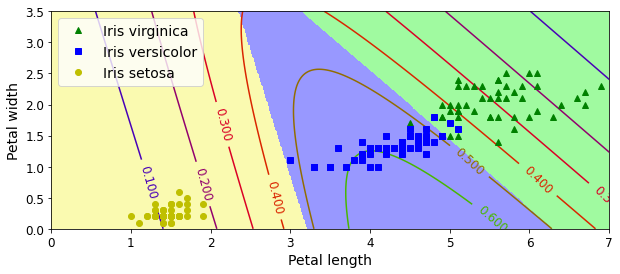
And now let’s measure the final model’s accuracy on the test set:
logits = X_test.dot(Theta)
Y_proba = softmax(logits)
y_predict = np.argmax(Y_proba, axis=1)
accuracy_score = np.mean(y_predict == y_test)
accuracy_score0.9333333333333333Our perfect model turns out to have slight imperfections. This variability is likely due to the very small size of the dataset: depending on how you sample the training set, validation set and the test set, you can get quite different results. Try changing the random seed and running the code again a few times, you will see that the results will vary.